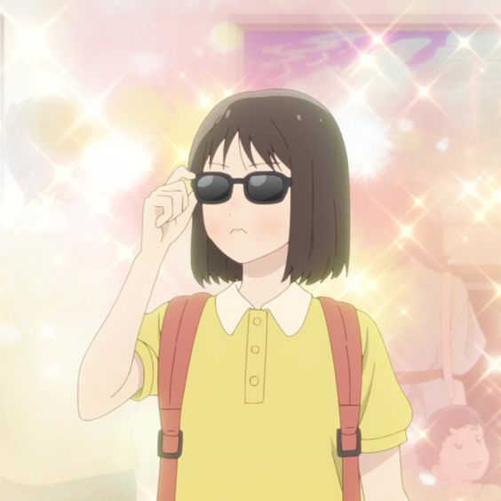

Some representative placeholder content for the first slide.
Second slide label
Some representative placeholder content for the second slide.
Third slide label
Some representative placeholder content for the third slide.
Announcement
I am fond of anything about animals or plants because I like all creatures, even the ones that are considered scary.
I like helping others and learning new things. I dislike when people are dishonest and say bad things about others behind their backs.
I am Mitsumi Iwakura. I am a first-year high school student. I just moved to Tokyo from the countryside.
I was born in a small town and grew up as a child prodigy. I am also a bob girl with sanpaku eyes.
I was always curious and observant; my senses are not always in sync with those around me.
I am an innocent and honest girl who can't help but influence those around me.
High school life has been a bit difficult so far. I am used to being the smartest student in the class, but now, I am surrounded by many brilliant students, which has made it challenging for me to keep up.
However, I am trying to get used to the new environment and hoping to make new friends in the process.

Sousuke Shima
My name is Shima Sousuke, I'm a second year student in Class III. I'm part of the Karate Club and like to sing and cook in my free time.
I live in a small apartment with my older sister, and sometimes I work part-time at my uncle's store.
Well, I like to try new things and learn more about myself as much as possible.
I really don't hate anything, but let's see, if I really have to pick a dislike, I'd say the heat and the summer, and the fact that I can sweat pretty easily.
I also dislike how some people would take advantage of others and how unfair life can sometimes.
But I try not to focus on these too much because I prefer to look at the positive side of things.
I'm kinda enjoying my highschool life but also feeling a little overwhelmed.
I have a lot of activities to do with different school clubs and things I have to do after school.